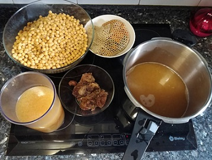
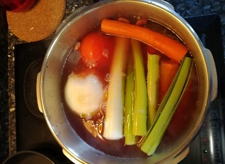
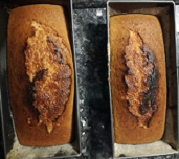

Comer,comer... y beber pero no mucho



Cosas que solemos comer...
- Alubiadas
- Menús beganos
- Menú txiki
- Vinos, cóckteles y sorbetes
- Postres
- Frituras
Cómo distribuímos las comidas
- Pequeña cata de vinos para los adultos y limonada para los pekes.
- Pikoteo para todos, para abrir boca.
- Presentación de cociner@s y platos
- A comer !!!
- Sobremesa
Aquí tenéis un enlace de buenas recetas
Visitar enlace Más de 1165 recetas en Mi Cocina Real.
Este enlace es para ayudar al etiquetado de huevos
Visitar enlace 72 recetas de postres fáciles y rápidos